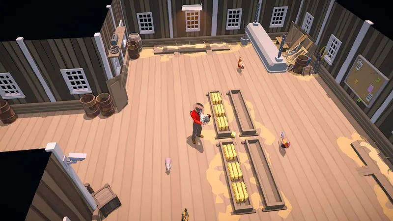

The Ranchers 资源指南

先看：这些资源现在该怎么找？
石头：先收集自己牧场的散落石头。原木：当前报告指向砍树。干草：确定是鸡饲料，但获取路线仍是待测试线索。木炭：燃烧制作方法尚未通过当前版本验证。锆矿：先购买；官方回答说明当前版本不应先去寻找矿洞。
先选正确路线，再决定要不要继续找
| 资源 | 当前建议 | 不要直接假定 | 状态 |
|---|---|---|---|
| 石头 Stone | 先收集自己牧场的散落资源。 | 已经有矿洞或稳定刷新路线。 | 报告 + 官方边界 |
| 原木 Wood Log | 砍树，并给早期建造留出储备。 | 树木刷新时间和所有权规则。 | 社区报告 |
| 干草 Hay | 放在鸡舍室内食槽；可以测试社区获取线索。 | 灌木或木箱一定掉落干草。 | 饲料已确认 |
| 木炭 Charcoal | 没有测试前不要批量消耗原木。 | 精确燃烧时间、产量或按键。 | 待验证线索 |
| 锆矿 Zirconite | 去市政厅找 Meriam 查看购买路线。 | 当前版本存在矿洞入口或固定价格。 | 购买路线已确认 |
石头：先收集自己土地上的储量
当前版本报告称，玩家可以收集自己牧场上的散落石头，而且可见储量会被采完。这意味着石头适合用于早期帐篷、工作台等建造决策，但不能据此承诺存在无限来源。
- 先收集自己土地上的散落石头。
- 给早期建造留出储备，不要把石头全部花在可选摆件上。
- 可见储量耗尽后，不要把矿洞当成当前版本已经开放的必然路线。
风险：当前讨论中有玩家报告，从不属于自己的土地拿资源可能触发犯罪系统。没有自己存档验证前，不要把邻近地块当成免费资源点。可靠的重复来源和矿洞开放情况仍待确认。
来源：官方矿洞状态回答 · 当前石头与犯罪系统讨论
原木：早期建造有用，但刷新未确认
社区记录把砍树作为当前获得原木的路线。现有资料不能证明树木多久刷新，也不能证明所有土地都遵循相同的采集规则，因此把它当作起点，不要当成完整经济表。
首发版本视频打开过一个红帐篷配方：8 个石头 + 10 根原木。这可以帮助你准备第一批建造材料，但不能推导其他建筑和家具的配方。
干草：用途已确认，获取路线还没确认
官方版主回答确认干草是鸡饲料。把它放入鸡舍内部食槽；测试自动化时，再观察已连接筒仓是否能够供给。这是现在可以直接执行的部分。
一条当前版本报告称，可以砍灌木或搜索 NPC 农场的木箱和桶来获得干草。它适合作为测试路线，但不是确定掉落表。要升级它的证据等级，需要记录地点、容器、版本以及获得前后的背包画面。
木炭：目前是测试线索，不是配方
社区扫描记录了一条可能路线：燃烧原木，等待材料状态变化，再用灭火器灭火后收集木炭。现有存档没有保留直接公开帖子链接，也没有当前版本截图，所以本文不会把它写成已确认配方。
如果要测试，先只用一根原木。记录放置物、点火方式、经过时间、火焰状态、灭火动作和最终背包结果。不要根据旧 Alpha 资料批量消耗原木；历史版主回答只能说明灭火器是预期的灭火方式。
锆矿：先买，不要先找矿洞
官方版主回答说明，在矿洞实装前，购买锆矿是当前唯一途径。多条当前社区回答把市政厅的 Meriam指认为卖家，但现有记录不足以发布稳定的当前价格。
- 打开市政厅地图位置。
- 找到 Meriam，查看当前材料或蓝图相关购买列表。
- 以自己存档中看到的价格为准，不要套用 Alpha 时代价格表。
如何记录一条有用的资源测试
一条有价值的资源报告不只是“我找到了”。请记录游戏版本、平台、土地是否属于自己、季节或天数、具体搜索对象、前后数量，以及背包或商店界面截图。只有在相近条件下有第二条可复现记录时，本站才会把线索升级为相互印证的结论。
资源常见问题
现在能挖到石头或锆矿吗？
不要直接这样理解。当前官方回答说明审查版本的矿洞尚未开放；石头先收集自己土地上的散落资源，锆矿先找卖家购买。
木炭燃烧法已经确认了吗？
没有。它是社区线索，并且只有历史灭火器背景。先用一根原木测试，记录结果后再决定是否可信。
维护说明：本站是非官方玩家资源，与 RedPilz Studio 和 Trophy Games 无隶属关系。Early Access 会持续变化，旧证据会保留并标注，不会静默替换。查看证据方法。